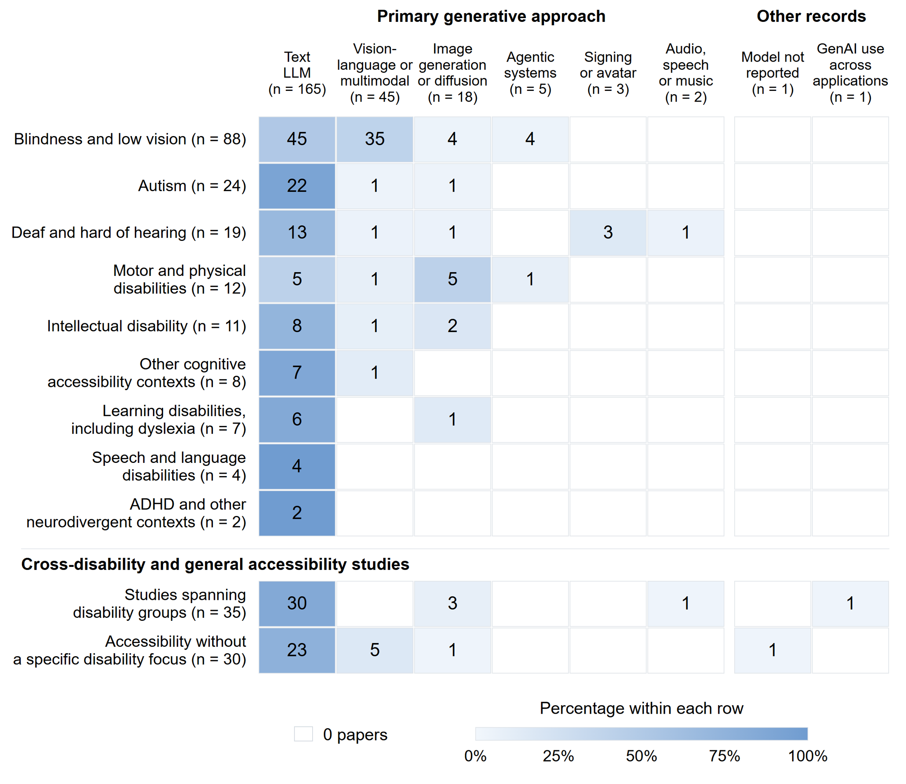
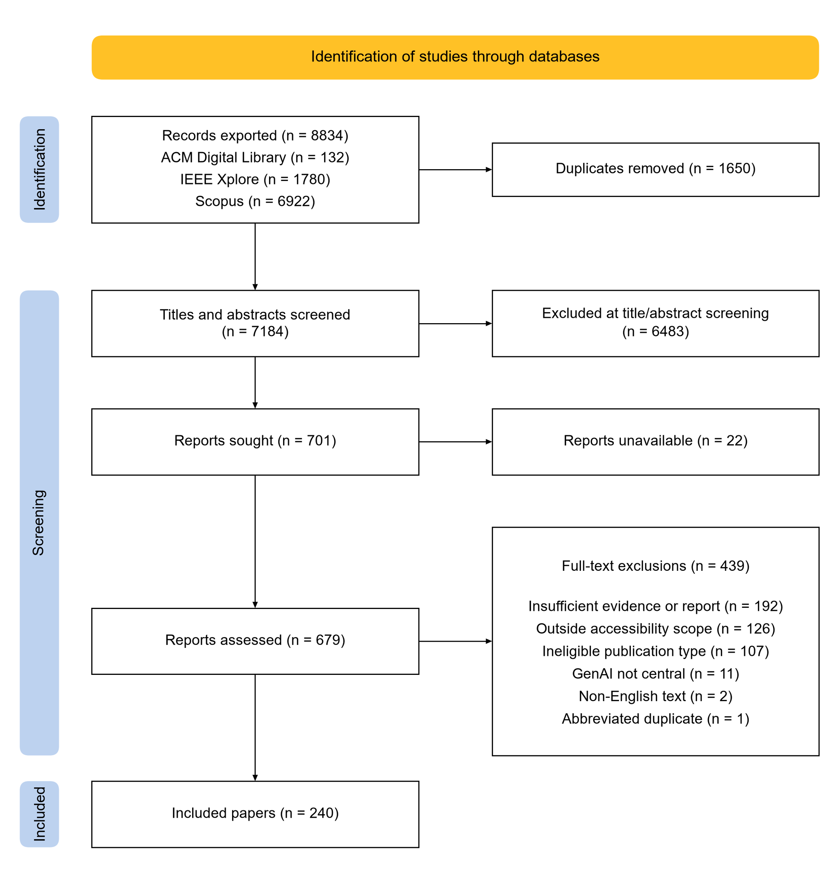
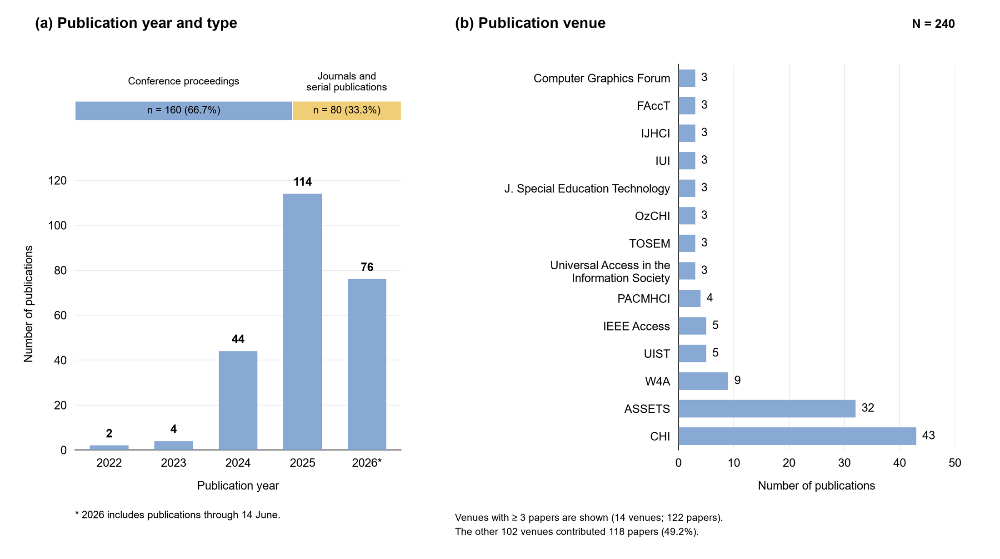
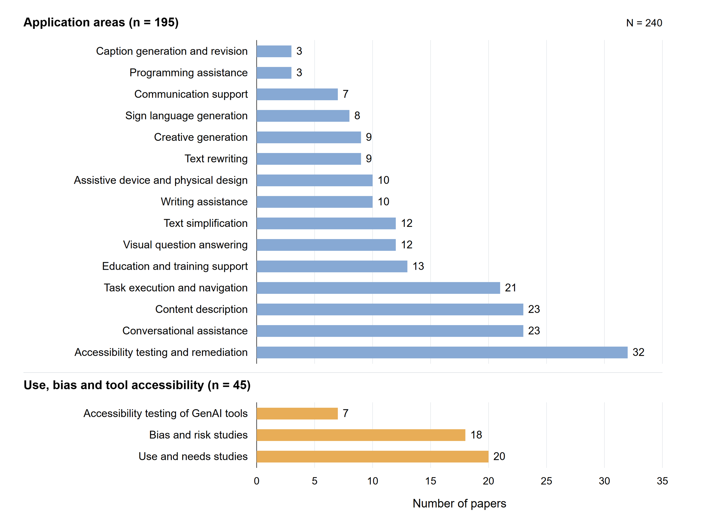
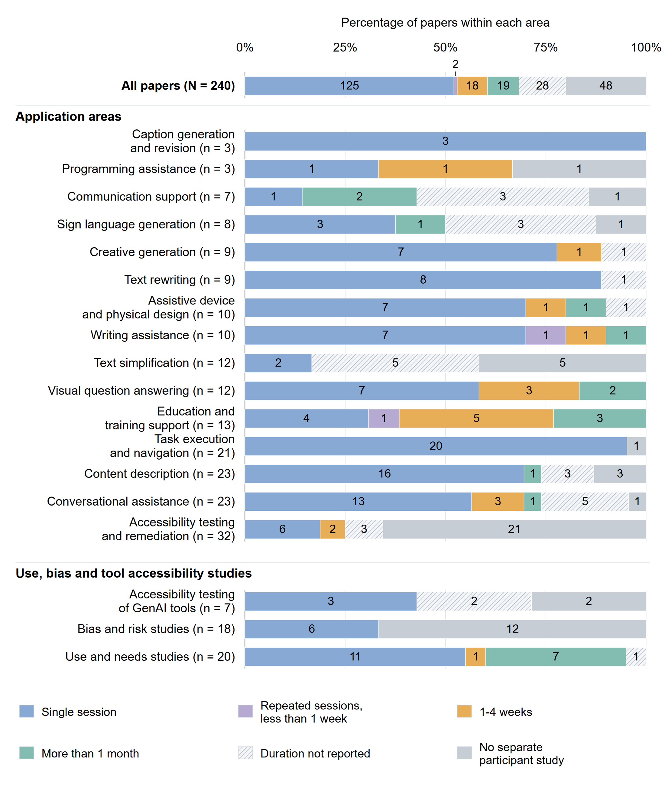
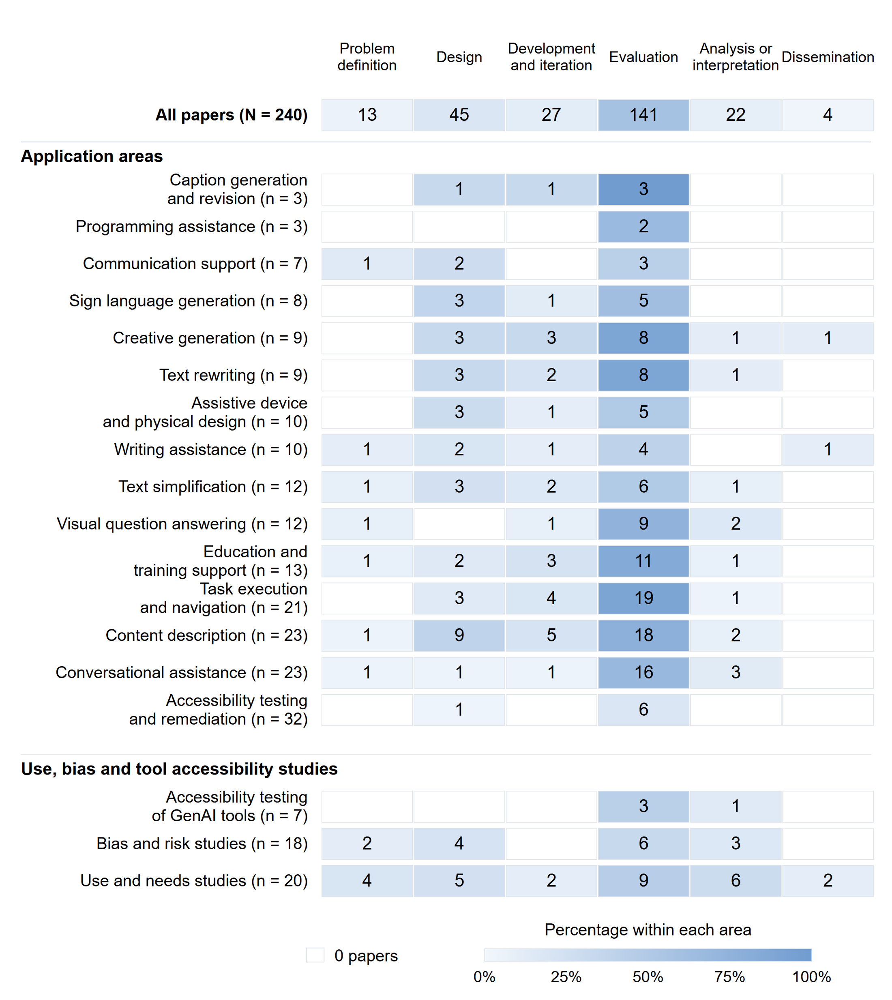
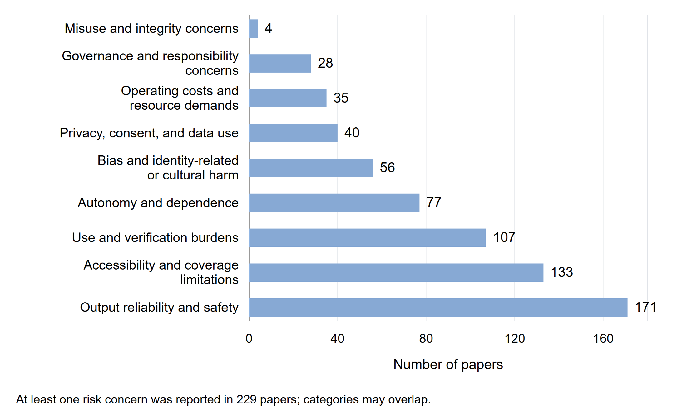

Where is GenAI being used?
Map applications and disability contexts, including whose access needs receive attention and which generative technologies are used.
Systematic review · Manuscript in preparation
Across applications and disability contexts.
What does it take for a generated output to become useful, dependable access?
I lead a review of 240 papers examining where generative AI is used, how accessibility claims are supported, and who helps shape the systems and check their outputs.
Papers out of 240 · Selected, non-exclusive stages.
Reported
involvement does not establish decision-making power.
A description, a rewritten passage, or an assistant response is part of a larger activity. This review connects the application to the people, study conditions, and responsibilities around it.
Map applications and disability contexts, including whose access needs receive attention and which generative technologies are used.
Examine study methods, reported duration, and disabled people’s involvement across the research process.
Distinguish an expectation to verify outputs from an explicit assignment of responsibility for checking, correction, support, or governance.
English-language, peer-reviewed research retrieved from ACM Digital Library, IEEE Xplore, and Scopus. The included papers were published from 2022 to the search cutoff in 2026.
I led the review and initial coding. The framework links application area and disability context with methods, participation, reported concerns, and responsibility. A second author reviewed the codes and categories, with weekly team discussions and a full-team consistency check.
Two authors independently screened titles and abstracts and assessed full texts; unresolved disagreements were discussed with a third author. One author manually extracted all 240 papers. Initial coding was reviewed by a second author, rather than independently duplicated extraction of the entire corpus.
Primary application and disability categories are mutually exclusive. Participation stages and reported concerns are non-exclusive. This is a descriptive synthesis, not a meta-analysis of effectiveness.
View the screening diagram ↗The corpus spans 18 application and research areas. These counts map research attention; they do not measure the prevalence of access needs or the effectiveness of a technology.

The largest primary disability category, followed by cross-disability research (35) and papers without a specific disability group (30).
The most common primary generative modality, followed by vision-language and multimodal models (45).
195 papers focus on applications; the remaining papers examine uses and needs (20), bias and risk (18), or the accessibility of GenAI tools themselves (7).
Who participates, how long participant studies run, and which concerns are reported reveal different aspects of the evidence base.
Corpus view · 240 papers
Disabled people are reported as participating in evaluation in 141 papers, compared with 13 at problem definition and 4 at dissemination.
Stages are non-exclusive. A paper can appear in several rows. Involvement alone does not show how much influence participants had.
View the full paper figure ↗Number of papers · bar scale 0 to 240
Source: manuscript participation analysis and Figure 6. All rows use the full corpus denominator.
171 papers require some form of output checking. Only 52 explicitly assign an actor a concrete responsibility. These are different coding dimensions, and their intersection matters.
| Concrete duty assigned |
No concrete duty reported |
|
|---|---|---|
| Checking requirement reported |
42 |
129Checking required, responsibility unspecified |
| No checking requirement reported |
10 | 59 |
The responsibility gap
Of the 129 papers that require checking without assigning a concrete responsibility, 124 still name a checker. A person can be expected to inspect an output without a clear account of who provides correction, support, or follow-up.
“Responsibility” includes duties related to checking, correction, support, monitoring, and governance, including proposed duties. The 52 papers are not 52 implemented redress systems. Missing reporting does not prove that responsibility was absent in practice.
Source: manuscript Table 5.
The synthesis points to questions for future design and evaluation. These are research directions, not interventions tested by this review.
Broaden the communities and tasks represented in research. Match the generative approach to the access need, including the conditions in which people actually use it.
Distinguish output quality from successful activity and sustained use. Report duration and setting so readers can see what an evaluation supports.
Involve disabled people in framing problems and interpreting findings as well as evaluating systems. Make their influence on decisions visible.
Make inspection, correction, and reversal accessible. Measure checking effort and missed errors, and identify a responder with the authority and resources to act.
Seven manuscript figures provide the fuller picture. Open any figure to inspect it. Full-text and dataset downloads are not currently available.






This review describes what the included papers report. Its coverage is bounded by three databases, English-language peer-reviewed publications, the search terms, and the 14 June 2026 cutoff. Twenty-two reports could not be retrieved. Primary categories also simplify overlapping disability contexts and applications.
The synthesis and manuscript have been drafted and are being prepared for submission. This page does not imply journal submission, acceptance, or publication.
Manuscript title: Generative AI and Accessibility: A Systematic Review of Applications, Design, and Evaluation. Page evidence reflects the September 2026 manuscript package; the current October baseline uses the manuscript title shown above.